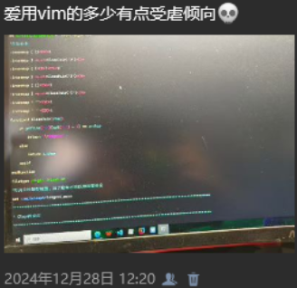

杂记#2025-06-06
纠结了很长时间，这篇文章命名的事。我是典型的选择困难，出于文章内容组织的形式，就把他命名为杂记了。不过应该也没什么人看，我就~~（梦）~~想到什么写什么了
时间感慨
今天就上半天学，下午高考布置考场了。一进门就看到教学楼处处拉着横幅，写着给高考考生加油助威的标语。睡眼惺忪的我一下子就惊醒了，高考？又来？下课，和同学聊天，我又想起来这茬，自言自语：“高考，又高考了……”让人听见了，“高考就考呗和你有啥关系？”是啊，和我有什么关系，该和我有关系吗？高考过一阵子后就该中考了。再过一年，我也上中考考场了。
今天是我初中三年，第二次，也是最后一次放高考假，初一的时候还什么也不懂，傻了吧唧地，快乐地就活了一年。一升入初二，第一个学期精神状态出奇的差。老师天天讲各种心灵鸡汤、各种教育学生，都放他妈狗屁。只有三年过得太快了这句话是真的。一直感觉自己刚升入初中啊，地生会考迫在眉睫了。
端午假期回来的那天，升旗仪式改成了给初高三学生加油的什么仪式，实际上也就是校领导在上面讲讲万年一套的老话，学生在台下鼓鼓掌。可能是吧，初一是什么场面，已经忘了，但依稀记得，我当时很受鼓舞，觉得老师和上台讲话的同学吐出来的每一个字、每一个标点符号都是那么振奋人心。今年只有麻木感和危机感，回班后，班主任说，明年就该你们走那个状元门啦！围着我心的最后那块砖头也被一脚踢飞了。
我对毕业不害怕，我甚至有点向往毕业。好像有人初中毕业哭得死去活来的，记得小学就有人这样了。可能我向来都是一个薄情的人，对于同学情这种事，没那么大牵挂，活的也舒心。网络也发达，能联系的自然会联系，没话说的也就不必强找话题，已经不是一路人了。顺其自然？顺其自然。真正让我害怕的是考试，我也没有特别想去的学校，也没有特别想学的专业。计算机？程序员？别操蛋来了，已经不是2020年了，普通人没高学历怎么卷。美术？那更是要饿死的了。没什么学习的动力，唯一的动力就是成绩不差暂且能在同学面前抬起头吧。我感兴趣的方向都有被AI替代的风险了。现在想这个确实为时过早，高中三年活下来才有资格想去哪里要饭。
一写学校的事就难免重力展开啊……
夏
小时候非常喜欢夏天，现在平等地讨厌春秋，因为会犯鼻炎；一贯地憎恨冬天，太冷了。那只有夏天好了。
夏天一直有一层回忆滤镜，今年要仔细感受一下。好好想想，童年夏天回忆有三：
空调、冰棍、帆布毯。两样陆陆续续都回来了，唯独空调费劲，空调到底是因为热才开，还是因为“时候到了”才开？空调服务的对象是“时候”，还是人？
工具迷恋
我承认，我真的没把时间花在刀刃上。经常浪费时间，在一个几百年前的软件上花大力气大时间，甚至废寝忘食，就为了实现一个已经由专业团队开发好的、开箱即用的、体验还更好的功能。美其名曰“极客精神”。我对极客精神没偏见，只是突然发觉，不应该把时间花费在这种事上。对，我就是在说Emacs和Vim。
工具说到底还是为了做事的，先选简单的工具，把事情做得精湛，再谈优化工具。代码还写不明白，反到是一直迷恋在配置各种编辑器，白白浪费时间，作业也写不成，代码也写不成，最后配置出来了一块会爆炸的排泄物，一团矛盾。
去年12月底，我开始知道了Vim这个东西，在折腾了一会被劝退后，发了条朋友圈吐槽。

但是不得不承认，Vim比Emacs好配多了。现在我的Vim起码到了能畅快写代码的程度。在这之前，一直都在断断续续地折腾Vim、终端、系统。真正写代码的时间没有三分之一。幸好在玩腻Arch后及时悔悟，装回了Windows，虽然种种不适应，但用起来很方便，起码不会再像以前那样浪费时间了。
感谢Windows，感谢微软……否则我就要成为开机 => 桌面炸了 => 花两天修复桌面 => 开机 => 打开自己半透明+亚克力+二次元小人背景的终端 => 输入neofetch欣赏半个小时桌面并截图发群里：“顺便说一下，我用的是Arch。”的那种人了。偶然间听到过一句话： “如果一块表时间是错的，那他走的每一秒都是错的；如果这块表停了，那它一天中至少有两次是对的。”挺有道理的。
翻看了一下自己写的代码和以前的文章，发现自己的快速上手的能力较强，各项技术都有涉猎，知识面较广，但这样的结果就是哪样都不深。尤其是数据结构与算法接触非常少，写不出来什么干巴的代码，之后要改一改了，在数学和算法上深耕一下，也在C语言深耕。C语言一直是很让我向往的语言，运行几乎无开销、对硬件极致的控制能力，灵活、高效、结构紧凑。但他复杂易混淆的指针也多次劝退我这个初学者。这个精髓没领悟到，玩C语言就玩不到灵魂了。